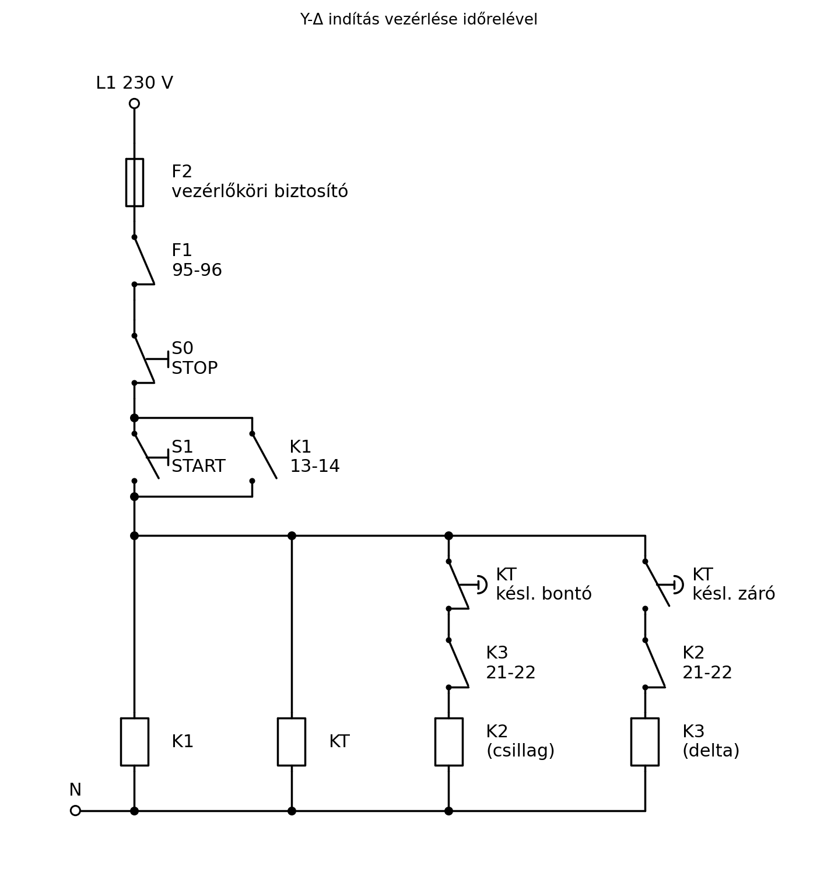
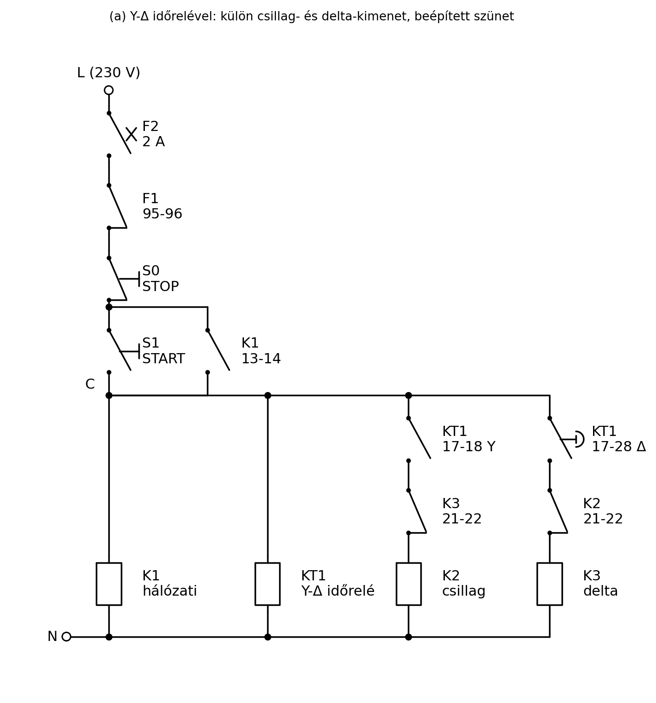
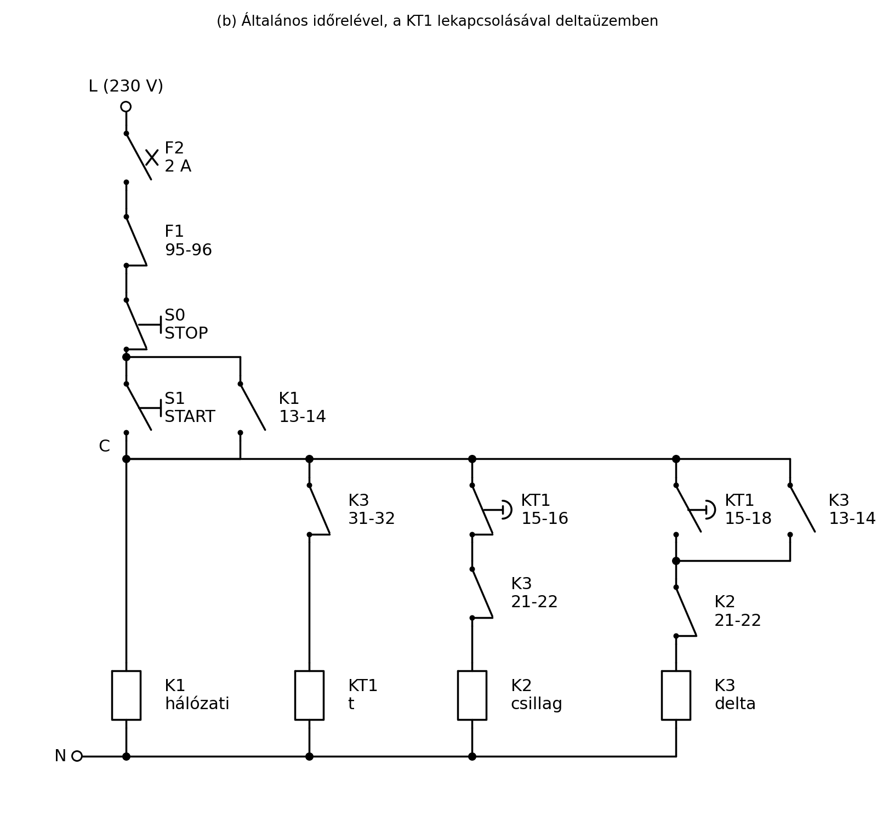

![Y-Δ indító főáramköre: K1 hálózati, K2 csillag, K3 delta - K1 a hálózatot a tekercskezdetekre (U1, V1, W1) kapcsolja; az F1 hőkioldó a K1 után, a tekercskezdetekhez menő vezetékekben van, ezért a tekercsáramot méri: beállítása In/√3 ≈ 0,58·In. K2 a tekercsvégeket (U2, V2, W2) csillagpontba köti; K3 a tekercsvégeket a K1 kimenetéről (az F1 előtt) a szomszédos fázisokra kapcsolja: U1–W2, V1–U2, W1–V2. K2 és K3 egyidejű behúzása zárlat: villamos és mechanikus reteszelés kell (a K2–K3 közötti szaggatott vonal). A motortesten PE. A vezeték-keresztezések pont nélkül nem csatlakoznak. A K2 és a K3 közötti, háromszöggel jelölt szaggatott vonal a mechanikus reteszelés (IEC 60617): a két mágneskapcsoló nem húzhat be egyszerre.](assets/ve115-diagram-1.png)
Az Indítás: közvetlen, csillag–delta, lágyindító, csúszógyűrűs alfejezetből tudjuk, hogy a kalickás forgórészű aszinkron motor közvetlen indításakor a vonali áram a névleges áram 5–8-szorosa is lehet. Egy 11 kW-os motor névleges árama deltában kb. 21 A, így a közvetlen indítási áramcsúcs 100 A fölé nőhet. Ha a hálózati csatlakozás nem elég erős, a feszültség letörik, a világítás villog, a szomszédos fogyasztók hibát jelezhetnek, és a hálózati engedélyes korlátozhatja az engedélyezett indítási áramot. Az Y-Δ indítás a leggyakoribb, viszonylag olcsó megoldás arra, hogy a hálózati indítási áram a közvetlen delta indítás egyharmadára csökkenjen.
Szemléletes kép. Képzeljünk el egy 11 kW-os szivattyúmotort, amelyet ipari elosztóból táplálnak. A kapcsolószekrényben három mágneskapcsoló sorakozik: K1, K2, K3. Indításkor a motor tekercseit csillagba kapcsolják, majd amikor a fordulatszám már közel van az üzemihez, átkapcsolják deltába. A hálózati áramlökés kisebb, de az indítónyomaték is kisebb, ezért ezt a módszert elsősorban olyan gépeknél alkalmazzák, amelyek kis nyomatékigénnyel indulnak: szivattyúk, ventilátorok, egyes fűrészgépek, kompresszoros rendszerek tehermentes indításánál.
Definíció. Az Y-Δ indítás olyan háromfázisú motorindítási eljárás, amelynél a motor tekercseit indításkor csillagba, majd az indítási folyamat végén deltába kapcsolják. Ha a motor névleges feszültsége deltában 400 V, akkor egy tekercsre csillagban csak 230 V jut. A vonali indítási áram és az indítónyomaték egyaránt a közvetlen delta indítás értékének egyharmada.
Továbbvitt eredmény. Az itt tanult kontaktorsorrendet, időrelés váltást és kölcsönös reteszelést használjuk a Kétsebességű, sorrendi és késleltetett vezérlések alfejezetben, valamint a Vezérlések építése: direkt, reverzáló, Y-Δ gyakorlati útmutatóban.
A motor kapocstábláján hat kivezetés van: U1, V1, W1 (tekercskezdetek) és U2, V2, W2 (tekercsvégek). A gyári áthidalók helyett hat erősáramú vezeték jön a kapcsolószekrényből. A főáramkör három mágneskapcsolót használ:
A delta bekötésnél a fázissorrendet meg kell őrizni. A szokásos kapcsolás:
Ha a delta hozzárendelést eltévesztik, valamelyik tekercs feszültség nélkül maradhat (a motor aszimmetrikusan, zúgva jár és melegszik), vagy az átkapcsolási áramlökés megnő; a forgásirányt a K1 bekötése határozza meg. A csillagpontot tilos a nullavezetőre kötni, mert az nem a hálózati nulla, hanem a motor mesterséges csillagpontja.
A főáramkör kapcsolási rajza:
A rajzon hat vezeték megy a motorhoz: a K1 és az F1 hőkioldó után a tekercskezdetekre (U1, V1, W1), a tekercsvégekről (U2, V2, W2) pedig a K2 csillagpontjára és a K3 delta-érintkezőire. A K3 a K1 kimenetéről, az F1 előtt kapja a fázisokat, ezért az F1 deltában is csak a tekercsáramot méri, így beállítása . A K2–K3 közötti szaggatott vonal a mechanikus reteszt jelöli.
| Mágneskapcsoló | Feladat | Kapcsolat |
|---|---|---|
| K1 | hálózat a tekercskezdetekre | L1–U1, L2–V1, L3–W1 |
| K2 | tekercsvégek csillagpontba | U2–V2–W2 összekötés |
| K3 | tekercsvégek delta mintázatban | U1–W2, V1–U2, W1–V2 |
Szabály. A K2 és K3 mágneskapcsoló egyidejű behúzása tilos, mert a fázisok közötti közvetlen rövidzárlatot okoz. Ezt nevezik átkapcsolási zárlatnak. A K1 mindig előfeltétel: ha K1 nincs behúzva, a motor nem kaphat feszültséget.
A vezérlésnek a következő sorrendet kell megvalósítania:
A vezérlési rajz egy gyakori, egyszerűsített kivitelt mutat:

A rajz szöveges leírása: a vezérlés felül az L1-ről indul, alul az N sínre zár. Sorban az F2 vezérlőköri biztosító, az F1 hőkioldó 95–96 érintkezője, az S0 leállító és az S1 indító nyomógomb következik; az ezután lévő közös pontból négy párhuzamos ág indul (K1 tekercs, KT időrelé, K2 ág, K3 ág). Az S1-gyel párhuzamosan a K1 13–14 záró segédérintkezője biztosítja az önfenntartást. A K1 tekercs és a KT időrelé tekercs egyaránt a hőkioldó mögött kap feszültséget. A KT késleltetett bontó érintkezője és a K3 21–22 bontó segédérintkezője a K2 tekercs ágában, a KT késleltetett záró érintkezője és a K2 21–22 bontó a K3 tekercs ágában van. A K2 és K3 ág kölcsönös villamos reteszelést ad.
A gyakorlatban gyakran beiktatnak egy rövid, 50–100 ms-os késleltetést a K2 ejtése és a K3 behúzása közé, hogy az érintkezők íve biztonságosan kialudjon. Ezt átkapcsolási hézagnak nevezzük. A pontos értéket a mágneskapcsoló és az időrelé gyártói adatai alapján kell ellenőrizni.
A vezérlés működését a legtömörebben az idődiagram mutatja: minden sor egy nyomógomb, tekercs vagy érintkező állapota (fent = működtetve / behúzva / zárt), a vízszintes tengely az idő. Az alábbi diagram a fenti sorrendet egy 5,5 s-ra állított időrelével mutatja; jelölése a 32.3 teljes kapcsolási lapjával egyezik (K1 hálózati, K2 csillag, K3 delta, KT1 időrelé).
Olvasd le a diagramról: a K2 sávja (ferde vonalkázás) a KT1 lejárta után ér véget, a K3 sávja csak a szürke, kb. 50 ms-os szünet után kezdődik – a K2 és a K3 sávja sehol sem fedhet át, különben átkapcsolási zárlat keletkezik. Általános időrelénél a 15–16 nyitása és a 15–18 zárása egyszerre történik; a szünetet itt a K2 elengedési ideje és a K2 21–22 reteszelés adja, a külön Y-Δ időrelé pedig beépített szünettel dolgozik (lásd lent). A vonali áram görbéje szemléltető, a fejezet 11 kW-os példájának nagyságrendjeit mutatja. A HTML-kiadásban a vezérlőkör nyolc lépésben lejátszható: minden lépésnél kiemelve látod a feszültség alatti áramutakat és a főkör állapotát.
Feladat (C). Rajzold be az idődiagramba, mi történik, ha a szerelő a K2 ágában a K3 21–22 bontó helyett a K3 egy záró érintkezőjét (13–14) köti be! Megoldás: a START után a K1 és a KT1 behúz, de a K2 nem, mert a K3 záró érintkezője nyitva van. A tekercsvégek (U2, V2, W2) szabadon maradnak, a motor tekercsei nem kapnak zárt áramkört: a motor áll, áramot nem vesz fel. A KT1 lejártakor a 15–18 zár, a K3 behúz (a K2 21–22 zárt, hiszen a K2 nem húzott be) – a motor közvetlenül deltában indul, a közvetlen indítás teljes áramlökésével. A diagramon tehát a K2 sora végig alacsony, a K3 sora 6 s-tól magas, a vonali áram 6 s-nál ugrik a közvetlen indítási értékre.
Reteszelés. A K2 és K3 közé mechanikus reteszelést is szerelnek, mert a villamos reteszelés nem véd például egy letapadt érintkező ellen. A mechanikus reteszelés fizikailag megakadályozza, hogy a két mágneskapcsoló egyszerre behúzzon. Ezt a Reverzáló kapcsolás és reteszelés alfejezetben tanult reteszelési elvből érdemes átemelni.
A motor kapocstábláján a kapcsok: U1, V1, W1, U2, V2, W2. A K1-től érkező három fázis az U1, V1, W1 kapcsokra kerül. A tekercsvégekhez (U2, V2, W2) csatlakozik a K2 és a K3.
A csillagkapcsolás: K2 három pólusa az U2, V2, W2 kapcsokat összeköti. A delta kapcsolás: K3 három pólusa az U1–W2, V1–U2, W1–V2 hozzárendelést valósítja meg.
Figyelem. A tekercskezdetek és végek felcserélése vagy a delta hozzárendelés hibája zárlatot vagy feszültség nélkül maradó tekercset, aszimmetrikus járást okozhat; a forgásirányt a K1 bekötése határozza meg. A bekötés előtt mindig ellenőrizd a motorgyártó kapocstábláját; régi motorokon a jelölés eltérhet, ezért folytonosságméréssel is azonosítani kell a tekercspárokat.
A motor kapocsdobozában a kapcsok szokásos elrendezése: felső sor W2 – U2 – V2, alsó sor U1 – V1 – W1. Ezért a csillagkapcsolás gyári hídjai vízszintesen a felső sort kötik össze (a), a deltáé függőlegesen az egymás alatti kapcsokat (U1–W2, V1–U2, W1–V2; b). Csillag–delta indításnál (c) a hidakat ki kell venni, és mind a hat kapcsot külön vezeték köti a kapcsolószekrényhez. A (d) kép a tipikus szerelési hibát mutatja: bent maradt a csillaghíd, így a K3 behúzásakor a delta-hozzárendelés a hídon át fázist fázissal köt össze.
Bekötés előtt mindig a kapocsdoboz fedelén lévő ábrát kövesd, és a kivett hidakat a dobozban tárold (a motor későbbi, közvetlen bekötéséhez kellenek). A HTML-kiadásban a négy eset egyenként nézhető.
Az eddigi két rajz (főkör, vezérlőkör) itt egyetlen tervlapon, közös áramút-számozással áll össze, vezérlőtáppal, jelzéssel, sorkapcsokkal és a két motorkábellel. A példamotor a fejezet 11 kW-os, 400 V Δ, 21 A-es motorja.
![A3-as tervlap 12 áramúttal. 1–3: X1 betáp, Q0 főkapcsoló, Q1 zárlatvédelmi motorvédő megszakító (I>), K1 hálózati kontaktor, F1 hőkioldó (I_r = 12,1 A) a tekercskezdetek felé, X1:U1 V1 W1 és W1 kábel; a K1 kimenetéről az F1 előtt a K3 delta kontaktor az X1:W2 U2 V2 kapcsokra (U1–W2, V1–U2, W1–V2); a K2 csillag kontaktor a tekercsvégeket csillagpontba zárja; W2 kábel; K2–K3 mechanikus retesz; M1 hat kivezetéssel, PE. 4: F4 – T1 400/230 V – F2. 5: Q1 13–14, F1 95–96, S0, S1 ∥ K1 13–14. 6: K1 tekercs. 7: KT1 tekercs. 8: KT1 15–16, K3 21–22, K2 tekercs. 9: KT1 15–18, K2 21–22, K3 tekercs. 10–12: K2 43–44 – H1 CSILLAG, K3 43–44 – H2 DELTA, F1 97–98 – H3 ZAVAR. Tükrök a Q1, F1, K1, KT1, K2, K3 alatt.](figures/img/ve115-4.png)
Kövesd végig a lapot az áramutak sorrendjében. A főkörben a Q1 itt csak zárlatvédelmet ad (mágneses kioldású motorvédő megszakító, I>), a túlterhelésvédelmet az F1 hőkioldó végzi: a K1 után, a tekercskezdetek felé menő vezetékekben, ezért a tekercsáramot méri és -re állítjuk. A K3 a fázisokat a K1 kimenetéről, az F1 előtt kapja; a K2 a tekercsvégeket csillagpontba zárja. A vezérlőkörben az indítóág (5.) után négy párhuzamos áramút következik: a K1 (6.) és a KT1 (7.) tekercse, a csillag K2 ága (8.: KT1 15–16 késleltetett bontó és K3 21–22) és a delta K3 ága (9.: KT1 15–18 késleltetett záró és K2 21–22). A tükrökből egy pillantással kiolvasható, hogy például a K2 21–22 a 9. áramútban reteszeli a K3-at. A 10–12. áramút a jelzés: H1 CSILLAG, H2 DELTA (üzem), H3 ZAVAR a hőkioldó 97–98 érintkezőjéről (a színek jelentése: ellenőrizendő: MSZ EN 60204-1). A HTML-kiadásban a lap kezelhető, a csillagidő csúszkával állítható, és az idődiagram mutatja a kontaktorok sorrendjét.
A két motorkábel méretezése. Y-Δ indításnál a motorhoz két kábel megy: a W1 (U1, V1, W1 és PE) és a W2 (U2, V2, W2). Deltaüzemben mindkét kábel a fázisáramot (tekercsáramot) viszi, nem a vonali áramot: Mindkét kábelt tehát az feltétellel, a szerelési mód és a halmozás szerint választjuk (lásd a vezetékméretezés fejezetét), és nem a 21 A-es névleges áramra. Tipikus tervezési hiba az egyik kábelt 21 A-re, a másikat „segédvezetéknek” méretezni: mindkettőben azonos nagyságú áram folyik.
A vezérlőtranszformátor terhelése. Az indításkor a K1, a KT1 és a K2 egyszerre kap feszültséget, a két kontaktor egyidejű behúzási teljesítményét (amely a tartási teljesítmény többszöröse) a T1 méretezésekor együtt kell figyelembe venni (gyártói adat, ellenőrizendő). A K2 csillagkontaktor kisebb lehet: csillagban a tekercsáram , és csak az indítás idejére zár (a készülékválasztás gyártói táblázat szerint, ellenőrizendő).
Az időrelé az indítási időt méri. A beállításnál a cél, hogy a motor csillagban elérje a fordulatszámának nagyjából 80–90%-át, mielőtt deltára vált.
Gyakorlati beállítási eljárás. Indítsd el a motort csillagban, és lakatfogóval figyeld a vonali áramot. Az indítás kezdeti árama csökken, ahogy a fordulatszám nő. Amikor az áram már nem csökken érdemben, akkor érdemes átkapcsolni. Állítsd az időrelét ennek az időnek körülbelül 1,0–1,2-szeresére (ne rövidebbre, mert a korai átkapcsolás nagy áramlökést ad), és ellenőrizd az átkapcsolási áramlökést. Tipikus indítási idő 3–15 s, de nagy tehetetlenségű gépeknél hosszabb is lehet (ellenőrizendő: a gép gyártói adatai).
Az időrelé a vezérlőpanelen többnyire moduláris, DIN-sínes elektronikus készülék. Az alábbi ábra bal oldalán a részei: 2 tápkapcsok (A1–A2), 3 kimeneti váltóérintkező (15 közös, 16 bontó, 18 záró), 4 LED-ek (U: táp, R: a kimeneti relé meghúzott), 5 funkcióválasztó, 6 időtartomány-választó és 7 finombeállító skála. A beállított idő : a feladatgyűjteménybeli (32.3) gyakorlati útmutató 5–8 s-os kezdőértékéhez például a 10 s-os tartományt választjuk, a skálát 0,6-ra állítjuk, így . A jobb oldalon a beállítás lépései láthatók.

A csillag–delta kapcsolásban a késleltetett bontó (itt 15–16) a K2, a késleltetett záró (15–18) a K3 ágába kerül; létezik külön csillag–delta időrelé is, beépített átkapcsolási szünettel. A funkciójelölés és a kapocsszámozás gyártónként eltér, ezért mindig az adatlapot kövesd. A HTML-kiadásban a részekre mutatva megjelenik a szerepük.
A fenti vezérlés általános (meghúzás-késleltetésű) időrelével dolgozik, és a KT1 a motor egész üzemideje alatt feszültség alatt marad. A gyakorlatban két másik megoldással is gyakran találkozol.

(a) Y-Δ időrelével. A csillag–delta időrelének két külön kimenete van: a csillag-kimenet (itt 17–18) a táp bekapcsolásakor azonnal zár és a beállított t idő után bont, a delta-kimenet (17–28) pedig a gyárilag rögzített szünet (például 50 ms) után zár (a kapocsjelek és a szünet gyártófüggők, ellenőrizendő: adatlap). Az átkapcsolási szünetet tehát nem a kontaktorok elengedési ideje, hanem maga az időrelé biztosítja; a K2 és a K3 21–22 reteszelés ettől függetlenül kötelező. Ezt választjuk, ha az átkapcsolási áramlökés és az ív miatt biztos, rögzített szünetre van szükség.

(b) Általános időrelével, a KT1 lekapcsolásával. A KT1 tekercse a K3 31–32 bontóján át kap feszültséget. Jelútkövetés: (1) START → a K1, a KT1 és (a 15–16 és a K3 21–22 bontón át) a K2 behúz – csillag. (2) A t idő leteltével a 15–16 nyit, a K2 elenged, a K2 21–22 visszazár. (3) A 15–18 zárt → a K3 behúz – delta – és a K3 13–14 önfenntartásba megy. (4) A K3 31–32 nyit → a KT1 feszültségmentes, a 15–18 nyit, a 15–16 visszazár. (5) A K3 a saját 13–14 érintkezőjén tart, a K2 ágát a K3 21–22 reteszeli – a KT1 deltaüzemben nem melegszik, és egy újraindításnál biztosan alaphelyzetből indul. Ennél a változatnál a K3 önfenntartása elengedhetetlen.
Feladat (C). A (b) változatnál elfelejtették bekötni a K3 13–14 önfenntartást. Mi történik? Megoldás: a K3 behúz, a K3 31–32 lekapcsolja a KT1-et, a 15–18 nyit, és mivel nincs önfenntartás, a K3 elenged. A K3 21–22 és 31–32 visszazár: a 15–16 már zárt, ezért a K2 újra behúz (csillag), a KT1 újraindul – a motor csillag és delta között ciklikusan „kattog”, amíg a STOP-ot meg nem nyomják vagy a hőkioldó le nem old.
Az interaktív ábrán csúszkával állítható az átkapcsolási idő 2–15 s között. A grafikon három görbét mutat: a csillagindítás vonali áramát, a deltaüzem áramát és a motor fordulatszámát. Ha az átkapcsolási idő túl rövid (2 s), a fordulatszám alacsony, és az átkapcsolási áramlökés nagy; ha jól beállított (pl. 8 s), a fordulatszám már 85% fölött van, és az áramlökés kicsi marad. Statikus tartalék ábra leírása: vízszintes tengelyen az idő (s), balra az áram (A), jobbra a fordulatszám (%). A motor 11 kW-os példaadatait használja: csillagban az indítási áram 42 A-ról csökken, a deltaüzem árama 21 A, az átkapcsolási csúcs 70–80 A a helyes időzítésnél.
Szabvány. Az Y-Δ indítóval egybeépített kapcsolókészülékekre, az érintkezők használati kategóriájára és a motorvédelmi koordinációra az MSZ EN 60947 sorozat vonatkozik. Ha a hőkioldó a K1 után, a tekercskezdetekhez (U1, V1, W1) menő vezetékekben van (szokásos elrendezés), a tekercsáramot méri: beállítása (a 11 kW-os példában ). Ha a hálózati betáplálásban van, a motor névleges áramára állítjuk (csillagállásban kevésbé véd; ellenőrizendő: gyártói kapcsolási rajz). Az áramváltós megoldásoknál figyelembe kell venni, hogy a csillag- és deltaüzemben az áramváltó elhelyezése eltérő. A konkrét szabványkiadást és a gyártói alkalmazási adatokat a tervezés előtt ellenőrizni kell.
Egy ipari mosodában a centrifugamotor Y-Δ indítóval indult. A szerelő azt tapasztalta, hogy a motor csillagban elindul, de nem vált deltába; a fordulatszáma alacsony maradt, és a hőkioldó időnként lekapcsolta. A helyszíni mérés során kiderült, hogy az időrelé tekercse rossz sorkapocshoz volt kötve, ezért az időrelé nem kapott feszültséget. A vezérlőkör feszültségmérése (jogosult személy, megfelelő mérési kategóriájú műszerrel) kimutatta, hogy a KT időrelé tekercsén nincs feszültség, a főáramkör és a K3 mágneskapcsoló rendben volt. A mágneskapcsolót feszültség alatt kézzel benyomni tilos: a behúzott K2 mellett a K3 benyomása fázisok közötti zárlatot okoz. A vezérlés javítása után a motor megfelelően átkapcsolt. A tanulság: a hibakeresésnél először mindig a vezérlési feszültségeket kell mérni, nem pedig azonnal a mágneskapcsolókat cserélni.
Tünet. A motor csillagban elindul, a fordulatszám emelkedik, de az időrelé idő lejárta után sem vált deltába: a K2 behúzva marad, a K3 nem húz be.
Hipotézisek.
Mérési lépések. Feszültségmentesítés után multiméterrel mérd a KT tekercs ellenállását és a vezérlési pontok folytonosságát. Feszültség alatt, jogosult személy által mérve ellenőrizd a KT tekercs kapcsain a feszültséget, majd az időzítés lejárta után a KT záró érintkező kimenetét a K3 tekercs felé.
Ok. A gyakorlatban gyakran a KT késleltetett érintkezője hibásodik meg, vagy a K2 21–22 segédérintkező nem zár vissza, mert a K2 mágneskapcsoló mechanikusan lassan ejt.
Javítás. Cseréld a hibás időrelét vagy segédérintkezőt, ellenőrizd a mágneskapcsoló mechanikáját, és próbáld ki újra a teljes sorrendet.
Megelőzés. Rendszeres érintkező-ellenőrzés, tartalék időrelé és segédérintkező készlet, a mágneskapcsolók portalanítása.
Lakatfogós árammérést feszültség alatt csak jogosult személy végezhet; a kapocsdoboz, a kontaktorok és a tekercsek vizsgálata az öt biztonsági lépés után, feszültségmentesen történik.
| Tünet | Mérés | Valószínű ok |
|---|---|---|
| átkapcsoláskor azonnal kiold a Q1 | kapocsdoboz-szemle; K2 pólusai ( az elvárt) | bent maradt a gyári csillaghíd (kapocstábla, d); K2–K3 átfedés hibás reteszelésnél |
| deltában a három vonali áram erősen eltér, a motor zúg | lakatfogó mindhárom fázisban; K3 pólusok, delta-vezetékek, tekercsellenállás | szakadt delta-ág (áramok kb. ) vagy felcserélt delta-vezetékek (pl. U1–U2: az egyik vonali áram közel nulla) |
| átkapcsoláskor a motor megrándul, nagyon nagy a csúcsáram | delta-hozzárendelés a rajz szerint; KT idő, fordulatszám | kedvezőtlen delta-hozzárendelés (U1–V2 típus a rajz szerinti U1–W2 helyett): a forgásirány azonos, de a delta-feszültség fázisa kedvezőtlen; vagy túl rövid KT idő |
| csillagban nem gyorsul fel, a hőkioldó old | áram- és fordulatszám-lefolyás | a terhelőnyomaték nagyobb a csillagbeli (kb. egyharmad) indítónyomatéknál (lásd a (A) példát), vagy túl hosszú KT idő |
| csillagban sem indul, csak zúg | vonali áramok; K2 pólusai kézzel működtetve | a K2 egyik pólusa nem zár: a csillagpontban fázishiány |
| lejár a KT, de a K2 behúzva marad, a K3 nem húz be | KT 15–18; K2 21–22; K2 mechanikája | a K2 mechanikusan akad vagy érintkezői hegedtek, ezért a 21–22 nyitva marad (a mechanikus retesz is tiltja a K3-at) |
Feladat (a), B. 11 kW-os motor ( A) deltában, terhelve: a vonali áramok 12 / 12 / 21 A. Mi a hiba?
Megoldás. A arány kb. (), ez a nyitott delta jellegzetes képe: az egyik fázistekercs nem kap áramot (nem zár egy K3 pólus, szakadt vagy laza egy delta-vezeték, esetleg tekercsszakadás). A két megmaradt tekercs viszi a terhelést, ezért túlmelegszik. Feszültségmentesen a K3 pólusokat, a vezetékeket és a tekercsek ellenállását mérjük.
Feladat (b), C. Csillagban az áram 10 s alatt csak 42 A-ről 30 A-ig csökken, a KT 10 s-ra van állítva, és a hőkioldó időnként old. Mi a teendő?
Megoldás. A motor csillagban nem gyorsul fel (az áram magas marad): a terhelés indítónyomatéka túl nagy a csillagbeli indítónyomatékhoz. A KT hosszabbítása csak tovább melegítené a motort. Ellenőrizni kell, nem szorul-e a gép; ha a terhelés ilyen, a Y-Δ indítás nem alkalmas, lágyindítót vagy frekvenciaváltót kell választani.
Feladat (c), B. Az átkapcsolás pillanatában a Q1 kiold; feszültségmentesen a kapocsdobozban a W2–U2–V2 híd a helyén van, és hat vezeték is be van kötve. Magyarázd el a hibát!
Megoldás. Ez a kapocstábla-ábra (d) esete: csillagban a híd nem zavar (a K2 ugyanazt kötné össze), de a K3 behúzásakor a delta-vezetékek a hídon át a három fázist egymással kötik össze: háromfázisú zárlat. A hidat ki kell venni, a kontaktorokat zárlat után ellenőrizni (hegedés), a szigetelést megmérni, és csak ezután szabad visszakapcsolni.
Gyakorlás: ennek az alfejezetnek a kidolgozott példái, gyakorlatai és megoldással ellátott feladatai az Összefoglaló feladatgyűjtemény villanyszerelő tanulóknak című kötet 32.3 szakaszában találhatók.
Az Y-Δ indítás arra szolgál, hogy az aszinkron motor hálózati indítási áramát a közvetlen delta indítás egyharmadára csökkentse. Ehhez a motor tekercseit indításkor csillagba, majd az indítási folyamat végén deltába kapcsolják. A főáramkör három mágneskapcsolót használ: K1 a hálózatot a tekercskezdetekre kapcsolja, K2 a tekercsvégeket csillagpontba köti, K3 a tekercsvégeket delta mintázatba kapcsolja. A K2 és K3 egyidejű behúzása tilos, mert fáziszárlatot okoz, ezért villamos és mechanikus reteszelést kell alkalmazni. A vezérlésben az időrelé (KT) késleltetett érintkezői vezérlik a váltást: indításkor K1 + K2 húz, az idő lejárta után K2 ejt, K3 húz. Az átkapcsolási időt úgy kell beállítani, hogy a motor csillagban elérje a fordulatszámának 80–90%-át. Az Y-Δ indításnál az indítónyomaték is a delta érték egyharmada, ezért csak kis nyomatékigényű, például szivattyú- vagy ventilátorhajtásokhoz alkalmas. Az itt tanult kontaktorsorrendet, reteszelést és időrelés váltást a későbbi vezérléseknél is használjuk.